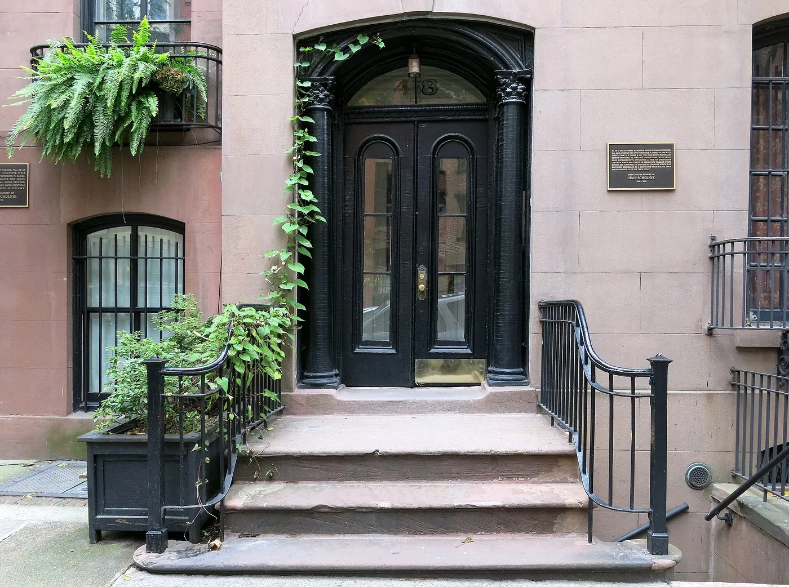

The West Village, slowly
The West Village is the part of Manhattan that still feels like a village: narrow streets that ignore the grid, brownstones, jazz basements and a café on almost every corner. It rewards walking without a destination.
Checked 2 November 2026. Prices, opening hours and transport details were verified against official sources. Things change — confirm before you book. How we check.
A neighbourhood that ignores the grid
Below 14th Street the grid gives up and the streets go their own way, which is why the Village feels different from the rest of Manhattan. The West Village is the western half, between Sixth Avenue and the river, and it is the half to walk.
Start at Washington Square Park and walk west: down MacDougal, across Bleecker, then into the quiet blocks around Perry and Charles Streets. The streets bend, the buildings are low, and after ten minutes you will have lost your sense of direction, which is the point.
The jazz clubs and small bars are the evening draw; the daytime draw is simply the walking. Weekday mornings are calm enough to hear birds, and the West Village is at its best in the late afternoon, when the light comes down the cross streets and people start sitting outside.

The streets worth walking
Four places that explain why people pay so much to live here.
Washington Square Park
The arch, the chess tables and the buskers: the Village's front room and the natural place to start a walk.
Bleecker Street
Cafés, record shops and the stretch everyone pictures when they picture the Village. Quieter west of Seventh Avenue.
Perry and Charles Streets
Low brick houses and quiet pavements. These are the blocks most visitors miss and locals protect.
Hudson River Park
At the western edge, the waterfront path and the sunset over New Jersey. A good place to end an afternoon.
Eating and drinking
The Village is a café neighbourhood first and a restaurant one second. Prices are a guide.
| Place | What to order | Price |
|---|---|---|
| Joe's Pizza | A plain slice, eaten standing | ~$4.50 |
| Mamoun's Falafel | Falafel sandwich | $7–9 |
| Carbone | Red-sauce Italian, booked well ahead | splurge |
| Village cafés | Coffee and a pastry between walks | ~$5–8 |
An afternoon into evening
Walk first, eat second, then find music. The Village is small enough that no plan needs to be strict.
-
10:00 — Washington Square Park
Start under the arch, watch the chess players and take MacDougal Street south.
-
11:30 — Bleecker Street
Coffee and a browse east to west, then turn into the side streets around Perry and Charles.
-
13:00 — Lunch
A slice at Joe's or a falafel at Mamoun's; both are cheap and both are institutions.
-
15:00 — Hudson River Park
Walk west to the water and follow the path north or south for the skyline and the sunset.
-
18:30 — Dinner and jazz
Eat early or book ahead, then find a basement club. Music usually starts later than you think.
Getting there and getting it right
West 4th Street–Washington Square is the main station, served by the A/C/E and B/D/F/M. The 1 stops at Christopher Street, and the L at Sixth Avenue. From Midtown, the F or the A is usually quickest; the neighbourhood is flat and easy to walk once you are there.
Weekday mornings are calm and the best time for a long walk. Late afternoon into early evening is when the neighbourhood is at its most alive. Weekend evenings are the busiest, and the narrow pavements around Bleecker fill up quickly.
Nearby and worth your time
The Village sits between SoHo, Chelsea and the High Line, so you can keep walking.


West Village questions
Is the West Village the same as Greenwich Village?
The West Village is the western part of Greenwich Village, between Sixth Avenue and the Hudson River, below 14th Street. It is the quieter, more residential half and the one most visitors picture.
When is the best time to visit the West Village?
Weekday mornings are calm and good for walking. Late afternoon into early evening is the liveliest, when the cafés fill and the bars open; weekend evenings are the busiest.
Is the West Village expensive?
The cafés and restaurants are not cheap, but you can eat well for less: a slice at Joe's Pizza is about $4.50 and a falafel sandwich at Mamoun's is around $7–9. Walking and window-shopping cost nothing.
Where do I start a walk in the West Village?
Washington Square Park is the natural start. From there, walk west down MacDougal and Bleecker, then into the quiet blocks around Perry and Charles Streets before finishing at the river.